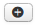

Pour créer un évènement, connectez-vous à l'administration de votre site puis rendez-vous dans le menu AllEvents. Cliquez sur le pictogramme suivant :
Vous vous retrouvez avec l'écran suivant :
Les données de l’évènement sont regroupées par onglet.
1 – Onglet évènement : les données principales de l’évènement.
2 – Onglet Description : vous pouvez inscrire une description pour votre évènement. Cette description est, comme tous les articles Joomla!, un code HTML. Cela signifie que vous pouvez écrire comme vous écririez un article en y ajoutant des liens, des images... Cette description sera affichée sur le frontend de votre site dans les pages évènement.
3 – Onglet Publication : cet onglet contient les données diverses de l’évènement comme son identifiant, le nombre de clics, les dates de création et modification,…
4 – Onglet Inscription : Si vous souhaitez ouvrir les inscriptions à vos utilisateurs, vous pourrez mettre le bouton ‘autoriser les inscriptions’ sur oui. Le formulaire "Standard" d’inscription permet d'afficher trois boutons : "je viens", "je ne viens pas" et "je ne sais pas encore".
5 – Onglet Paramètres : Tout comme l’onglet publication, l’onglet paramètres contient des données annexes sur l’évènement comme la personne de contact.
6 – Onglet Référencement : Afin d’optimiser votre référencement, vous pouvez remplir les méta-descriptions, Mots clés et robots.
7 – Titre : Choisissez un titre pour votre évènement.
8&9 – Date : vous devez donner au moins une date de début à votre Évènement. Si vous le souhaitez, vous pouvez lui donner une date de fin. Vous pouvez manuellement introduire une heure (ex. “15/04/2012 18h30”).
10 – Si l’évènement dure toute la journée, cochez cette case. Vous n’aurez plus à saisir d’heure pour votre évènement.
11&12 – Vignette et affiche : vous pouvez assigner une petite photo (vignette) ainsi qu’une affiche à l'évènement.
13 – Fichier annexe : vous pouvez compléter votre évènement avec un fichier contenant votre affiche, votre flyer,…
14-20 – Agenda/Activité/Lieu/Public/Section/Catégorie/Ressources : Si vous avez préalablement créé ces sept rubriques, vous pourrez y affecter votre évènement. Si une donnée n’existe pas, vous pouvez cliquer sur le bouton et saisir les données titre et couleur. Par la suite vous pourrez venir compléter toutes les autres données via le panneau de contrôle AllEvents.
Une fois que vous avez renseigné tous les paramètres souhaités, cliquez sur
 .
.